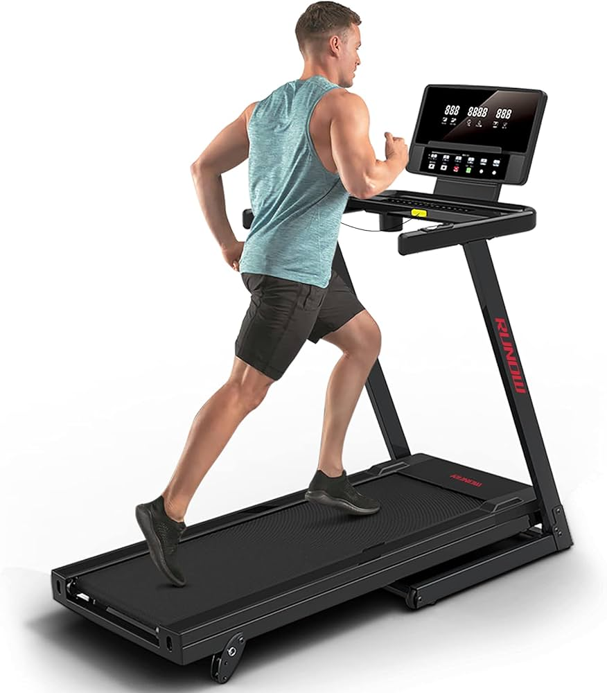

TREAD MILL

Treadmill adalah alat olahraga yang memungkinkan seseorang berjalan atau lari di tempat. Treadmill memiliki lintasan berjalan yang bergerak di bawah. Biasanya, treadmill bisa diatur kecepatan dan kemiringannya sesuai tujuan latihan.
Treadmill digunakan untuk membakar kalori, melatih kardiovaskular, dan meningkatkan otot kaki. Cara pakai alat ini cukup berdiri di atas lintasan dan mengeklik tombol mulai atau start pada bagian atasnya.
Sumber: IDN Times